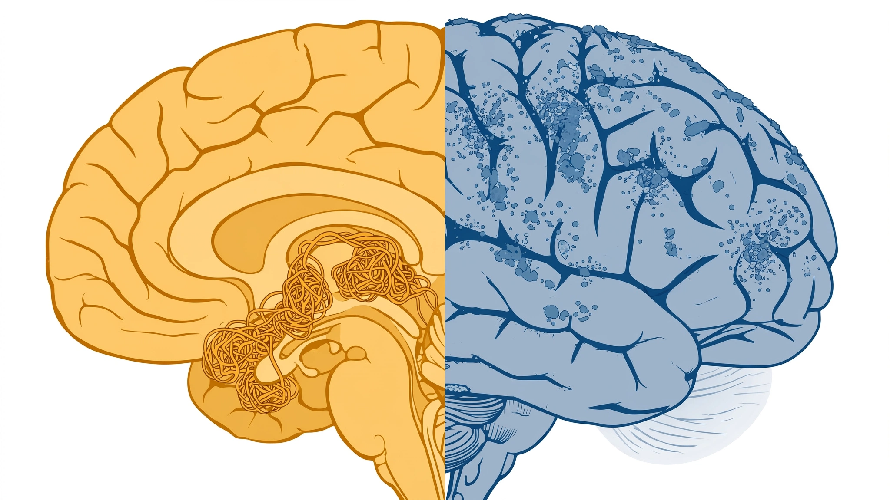

Alzheimer’s First Tau Drug Slowed Thinking Decline by 42%, but Couldn’t Help Patients Dress Themselves
Diranersen reduced tau tangles and slowed cognitive decline across five of six clinical scales. But hidden in the CELIA data is a gap no analyst has quantified: a 42–50% slowing on pure cognition tests, zero effect on daily function. That asymmetry tells us tau and amyloid destroy different parts of the brain. That asymmetry makes combination therapy not optional, but inevitable.

Forty-two percent. On the ADAS-Cog13, a thirteen-item test that measures memory recall, word finding, object naming, and the ability to follow multi-step commands, patients who received the lowest dose of diranersen declined 42% more slowly than those on placebo over eighteen months. On the MMSE, a blunter instrument that asks patients to count backwards from 100 by sevens and recall three words after a five-minute delay, the slowing was 50%. These are the strongest pure-cognition numbers any Alzheimer’s drug has posted in a controlled trial.
But on the ADCS-ADL-MCI, which tracks whether patients can dress themselves, manage their medications, operate a telephone, and navigate familiar routes without getting lost, diranersen did nothing. Zero benefit across all three doses. No signal at all, across all three dose levels and every subgroup analysis.
That split did not make the headlines Tuesday when Biogen and Ionis Pharmaceuticals presented the full CELIA trial data at the Alzheimer’s Association International Conference in London. Headlines focused on CDR-SB, the composite gold standard, where diranersen’s 26% slowing roughly matched Leqembi’s 27% and lagged Kisunla’s 29–36%. Biogen stock fell 7% on the miss. RBC Capital Markets analyst Brian Abrahams wrote that the results “leave more questions than answers.”
Wrong questions. He is right that questions remain, but every analyst fixating on the CDR-SB composite score is asking the wrong ones.
Numbers Nobody Lined Up
Alzheimer’s trials measure decline across multiple scales because the disease attacks multiple domains. CDR-SB, the primary endpoint for nearly every recent trial, is a composite that blends memory, orientation, judgment, community affairs, home activities, and personal care into a single eighteen-point score that is useful as a summary statistic but functions as a blender, one that homogenizes six distinct cognitive and functional domains into a number that hides which ingredients are carrying the weight.
When you separate the ingredients, diranersen’s data tells a different story from anything the amyloid drugs have shown. Here is the comparison nobody ran across all available scales:
| Scale | What It Measures | Diranersen (60 mg) | Leqembi | Kisunla |
|---|---|---|---|---|
| CDR-SB | Global cognition + function | 26% | 27% | 29–36% |
| ADAS-Cog13/14 | Pure cognition (memory, language, praxis) | 42% | ~26% | ~24% |
| MMSE | Cognitive screening (orientation, recall, attention) | 50% | Not primary | Not primary |
| iADRS | Cognition + daily function composite | 30% | Not primary | 22–35% |
| ADCOMS | Early-stage decline detection | 23% | Not primary | Not primary |
| ADCS-ADL-MCI | Daily functioning (dressing, meds, phone, navigation) | 0% | Positive signal | Positive signal |
The pattern is stark. On scales that measure thinking, diranersen outperforms. On doing, amyloid wins. On the composite scales that blend cognition and function together, all three drugs look roughly equivalent, which is precisely why the composite score is misleading. CDR-SB, the number everyone compared Tuesday, is a weighted average of two fundamentally different disease processes masquerading as one.
What the Gap Means Biologically
Tau tangles and amyloid plaques both accumulate in Alzheimer’s brains, but they do not accumulate in the same places at the same time. Amyloid plaques tend to deposit broadly across the neocortex, including regions governing motor planning, spatial navigation, and the executive functions that underpin daily activities. Tau pathology follows a more specific trajectory, first appearing in the entorhinal cortex and hippocampus, the structures most critical for forming new memories and retrieving old ones, before spreading to the temporal and parietal lobes where language processing and semantic knowledge reside.
Anatomy predicts the data. Every regional concentration pattern maps onto exactly the split the CELIA trial revealed in its six-scale efficacy breakdown. Reducing tau tangles protected the hippocampal memory circuits (ADAS-Cog13: 42% slowing) and the orientation and recall circuits measured by the MMSE (50% slowing), but had no measurable effect on the broader cortical networks that govern whether someone can sequence the steps to get dressed, manage a pillbox, or find their way to a familiar store.
The amyloid drugs, by clearing plaques across the full cortex, appear to deliver more balanced protection: weaker on any single cognitive domain, but preserving function across both thinking and doing. This is consistent with the TRAILBLAZER-ALZ 2 data, where donanemab’s benefit was measurably stronger in patients with lower baseline tau. Remove the plaques when tangles are still limited, and the patient keeps functioning. Wait until tau has spread, and plaque removal alone is not enough.
No single drug will solve Alzheimer’s. It is a two-front war, and treating only one front preserves only one set of capabilities. Ionis’ chief development officer Holly Kordasiewicz, who discovered diranersen, said the quiet part out loud at AAIC: “I don’t think it will be an either-or. It’s going to be, ‘When do we start them both?’”
The Inverse Dose Paradox
The data contains a second surprise. Diranersen was tested at three dose levels: 60 mg every twenty-four weeks, 115 mg every twenty-four weeks, and 115 mg every twelve weeks. Counterintuitively, the lowest dose produced the best cognitive results while higher doses, which achieved greater tau reduction in cerebrospinal fluid, showed smaller or no cognitive benefits.
This violated the trial’s prespecified primary endpoint, which expected a dose-dependent response. The miss sent Biogen stock down 7%. But the biology may explain the paradox.
Tau is not purely pathological. In its normal, unphosphorylated form, it stabilizes microtubules, the structural scaffolding inside neurons that transports proteins, organelles, and signaling molecules from the cell body to the synaptic terminals where thinking happens. Suppress tau production too aggressively and you may save the neuron from tangles while starving it of the structural protein it needs to function.
H.C. Wainwright analyst Andrew Fein flagged this hypothesis in May: side effects increased with dose, suggesting that high-dose tau suppression may cross from therapeutic to harmful. If correct, the therapeutic window for tau-targeting drugs is narrow, and finding the right dose matters more than finding the maximum tolerated dose. That is a fundamentally different optimization problem than the amyloid drugs faced.
Safety Profiles That Never Overlap
Every conversation about amyloid drugs eventually arrives at ARIA (amyloid-related imaging abnormalities), the brain swelling and microbleeds that occur in 12–24% of patients and require regular MRI monitoring. Three treatment-related deaths occurred in the Kisunla trial. The FDA mandated MRI surveillance every three to six months for both approved amyloid drugs, adding thousands of dollars and dozens of hours to each patient’s treatment burden.
Zero ARIA cases. Not a single incident of brain swelling or microbleeds in 416 patients across all three dose arms and every genotype subgroup. Its mechanism does not touch amyloid at all, so the inflammatory cascade that causes brain swelling and microbleeds in amyloid-clearing drugs, the very reason clinicians hesitate to prescribe Leqembi and Kisunla to high-risk patients, simply never activates.
What it does produce is confusion: 13% of patients at the lowest dose versus 5% on placebo, resolving within a week. And it requires lumbar puncture for each dose. That is a needle into the spinal canal every six months, a procedure that carries its own headaches (literal and figurative) and procedural risks, though Kordasiewicz noted the frequency is far lower than the biweekly infusions amyloid drugs require.
| Risk | Diranersen | Leqembi | Kisunla |
|---|---|---|---|
| Brain swelling (ARIA-E) | 0% | ~12.6% | 24.0% |
| Symptomatic ARIA | 0% | ~2.8% | 6.1% |
| Treatment-related deaths | 0 | 0 | 3 |
| Confusion (transient) | 13% | Baseline rates | Baseline rates |
| MRI monitoring required | No | Every 3–6 months | Every 3–6 months |
| Administration | Lumbar puncture q6mo | SC injection weekly | IV infusion monthly |
The safety profiles are not better or worse. They are orthogonal. A patient who cannot tolerate ARIA risk (ApoE4 homozygotes face rates above 30%) might be an ideal diranersen candidate. A patient who will not accept spinal injections might prefer weekly subcutaneous Leqembi at home. This is the first time Alzheimer’s treatment has offered genuine choice architecture rather than a single, take-it-or-leave-it option.
Combination Therapy Math
If the field moves toward dual tau-plus-amyloid therapy (and the CELIA data makes a strong mechanistic case that it should), the economics reshape the Alzheimer’s market entirely.
Leqembi currently lists at $26,500 per patient per year, a price that CMS agreed to cover under traditional Medicare after a bitter two-year fight over the evidence bar for Alzheimer’s drugs. Kisunla lists at roughly $32,000 per year, though costs taper as amyloid clears and treatment stops. Diranersen’s pricing is unknown, but antisense oligonucleotide therapies in neurological indications typically range from $100,000 to $375,000 annually. Biogen’s own Spinraza, an ASO for spinal muscular atrophy, costs $187,500 per year after the loading period. The Alzheimer’s market is vastly larger, which pushes toward lower per-patient pricing, but the administration route (intrathecal injection requiring a specialist) pushes toward higher.
A conservative estimate: if diranersen prices at $50,000–$80,000 per year (reflecting the smaller dose, less frequent administration, and competitive pressure from amyloid drugs), a combination regimen would run $76,500–$112,000 per patient per year. The Alzheimer’s Association estimates 6.9 million Americans live with the disease, of whom roughly 1–2 million are in the early stages where these drugs show benefit.
At one million eligible patients, even 10% uptake of a dual regimen implies a $7.7–$11.2 billion annual market, larger than the current combined revenue of every Alzheimer’s drug ever sold. Biogen, Eisai, Lilly, Ionis, and the gene-therapy startups chasing tau are all doing this math right now.
One Injection, Permanent Silence
While the market debated diranersen’s dose curve, a quieter presentation at AAIC may prove more consequential. Voyager Therapeutics reported that its gene therapy VY1706, delivered as a single intravenous infusion, achieved 75% lowering of MAPT mRNA and tau protein across Alzheimer’s-relevant brain regions in primates for at least six months. No lumbar puncture, no repeat dosing. A single IV injection that crosses the blood-brain barrier and silences tau production at the genetic level.
Human trials loom. Voyager plans to begin dosing adults with early Alzheimer’s in the second half of 2026. If it works, the entire administration-burden comparison changes: one infusion versus two annual spinal injections versus weekly subcutaneous shots. The gene therapy approach also suggests the possibility of calibrated, partial tau suppression, potentially avoiding the inverse dose problem that plagued CELIA’s higher-dose arms.
Denali Therapeutics and Arrowhead Pharmaceuticals are pursuing their own tau-targeting approaches. A tau-targeting pipeline that was effectively empty eighteen months ago is now crowded with antisense oligonucleotides, gene therapies, and small molecules racing toward the clinic.
What This Analysis Did Not Prove
Cross-trial comparisons are unreliable. CELIA enrolled 416 patients; Clarity AD enrolled 1,795; TRAILBLAZER-ALZ 2 enrolled 1,736. Different patient populations with different genetic risk profiles, different cognitive entry criteria that determine who gets randomized, and different placebo decline rates that shift every percentage comparison. Cross-trial ADAS-Cog13 and MMSE comparisons in the table above are directional, not definitive. Only a head-to-head trial could confirm whether diranersen truly outperforms amyloid drugs on pure cognition.
An inverse dose-response relationship could be a statistical artifact of a small trial. Only 416 patients were randomized across three arms, meaning each arm had roughly 104 patients after placebo allocation. Biogen acknowledged the miss on the prespecified endpoint and is now consulting outside experts, biostatisticians, and regulatory advisors on how to design a Phase 3 trial around a drug whose lowest dose works best, a puzzle no Alzheimer’s sponsor has faced before.
Diranersen’s pricing is entirely speculative, and Biogen has not disclosed commercial plans. If priced at Spinraza levels ($187,500/year), combination therapy becomes inaccessible to most healthcare systems. If priced to compete with amyloid drugs ($30,000–$50,000), the business case weakens for a drug requiring specialist lumbar puncture administration.
Eighteen months is short for a disease that progresses over years. Whether diranersen’s cognitive protection holds at 36 or 48 months is unknown, and Biogen’s long-term extension study will not deliver Phase 3 data until 2030 or 2031, meaning patients and clinicians will spend half a decade making treatment decisions on eighteen months of evidence.
Two Targets, One Disease
Alzheimer’s has been treated as a single disease with a single target for decades. First amyloid, and then, when amyloid drugs showed modest benefits, the field doubled down on amyloid. Diranersen’s data does not prove tau is a better target. It proves something more important: Alzheimer’s is a two-target disease, and the targets are not interchangeable. Tau protects thinking; amyloid protects doing. Neither alone is sufficient.
For patients and families, that means the era of asking “which drug?” is ending, replaced by the more expensive, more complex, but potentially far more effective question of “which combination, at what dose, in what sequence?”
For investors, it means the Alzheimer’s market is not a zero-sum fight between Biogen and Lilly. It is an additive market where tau and amyloid drugs may be prescribed together, and the companies that figure out the combination first will define the standard of care for a generation.
For researchers, one question towers above the rest. If tau tangles truly damage hippocampal circuits while amyloid plaques damage cortical function networks, that has implications far beyond drug development: it changes how we image the disease, how we stage it, and when we intervene. CELIA, for all its ambiguities, has opened a door that the field has been walking past for twenty years.
If you or a family member has been diagnosed with early Alzheimer’s, ask your neurologist whether you are a candidate for both an amyloid-clearing drug and a future tau trial. The Alzheimer’s Association maintains a TrialMatch service that connects patients with open studies. Diranersen’s Phase 3 trial is expected to begin enrolling in 2027. Getting into the trial that tests the combination, not just the solo drug, will matter most.